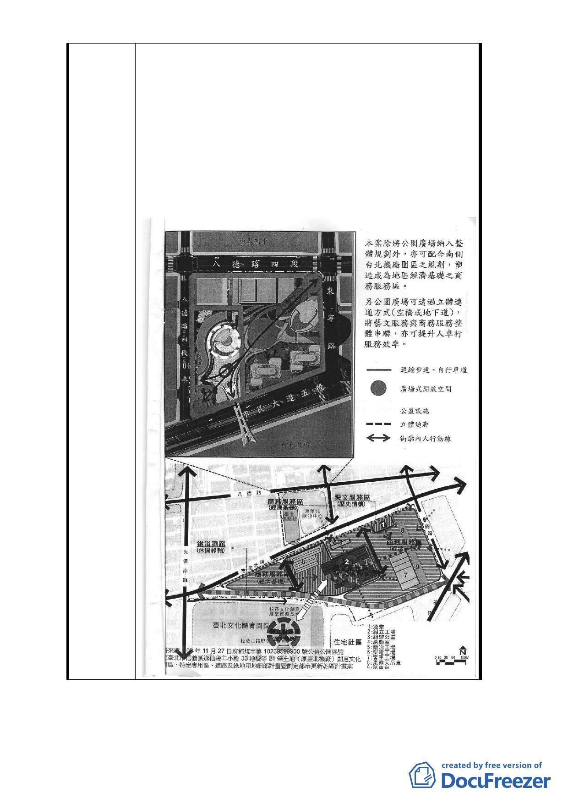

2. 另 依 監 察 院 102 年 11 月 12 日 院 台 內 字 第
1021931141 號函（詳附件二）調查意見書所示，
京華城基地之開發，其使用強度與周邊環境容受
力及都市機能應一併檢討整體考量。倘本計畫僅
單獨考量解除整體開發乙節，未就使用強度、周
邊環境容受力及都市機能納入審議，仍無法具體
解決本商三街廓土地後續開發之窘境，故請台北
市政府及都委會委員參酌前開監察院調查意見，
將本案土地使用回歸第三種商業區之規定，並針
對基準容積率與開發方式詳予評估審議。
- 41 -